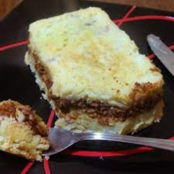

Pastel de Papa/ Potato Cake

a really controversial classic
this is one of those dishes that almost no one that tastes it dislikes it, i mean, how could you? it's tasty, has a good mix of ingredients, doesn't cost a lot to make and looks really good on a plate.
you may ask: if it's so good, why do you say that it's controversial? well the thing that happens with the pastel de papa is that there are a lot of ways to make it. I don't mean it in a regional sense, to my knowledge there are not diferent recipes based on the place you were born. The real difference comes on each family because everyone makes the pastel de papa different; some people use dough to make it more firm, others put olives to add a particular taste and others, for some degenerate reason, use raisins.
this are just a few example of the great variety of posible ingredients that this wonderful dish can have.
In this case we will make a traditional version, but keep in mind, as i mentioned it earlier, that you can expand the recipe with a lot of ingredients.
ingredients:
- 1 kg of potatos
- 1/2 kg of minced meat
- 1 onion
- 1/2 bell pepper
- 2 garlic cloves
- 1 stock cube
- garlic powder
- paprika
- 25 grams of butter
- 1 trickle of milk
- nutmeg
- oil
- salt
- pepper
Steps
- Cut the potatos in cubes and put them to boil with salt.
- cut the onion with the garlic and the bell pepper.
- put the oil in a cooking pot or frying pan and cook all the ingredients you previously chopped.
- when the onion gets transparent add the meat and fry it while you move it with a spoon.
- put salt, pepper and add the garlic powder, the stock cube,paprika and cook it all together for 15 minutes.
- once the potatos boiled, mix them with butter and milk to make mashed potatoes.
- in a oven dish, make a layer with the mashed potatoes then, on top of this, make a layer with the meat and then another layer of mashed potatoes. to distribute it properly use a cold spoon.
- put the dish in an oven for 15 to 20 minutes till the top layer gets crispy.
- final and most important step: !Enjoy the food!
credits for the recipe:
Thanks to paulinacocina for the recipe!
Go back to main page